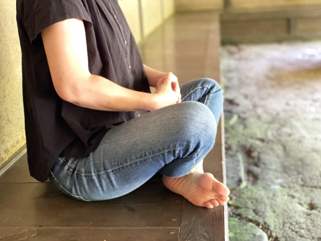

座禅とは、姿勢を正して座り、精神を統一させることで自分と向き合うという仏教の修行方法のこと。 その本来的な意義は、自分自身のこころを静かに見つめ直すこと。
座禅は自分と向き合うために行う
座禅とは心を無にしてひたすら座ること。もともとは禅宗の修行方法の一つで自分と向き合う事を目的としています。
座禅の効果
1.心が落ち着きます。心を落ち着かせ自分を見つめなおし、悟りを得ることができます。今の悩みや、考えていることへの対処法が浮かぶかもしれません。
2.姿勢が正しくなります。座禅は姿勢を正し行うので良い姿勢に整えられます。
3.集中力が高まります。精神統一を行う事で何事に対しても集中力が向上するでしょう。
座禅のやり方
座禅で大切なのは姿勢と呼吸です。まずはこの２つを押さえておきましょう。
座禅アプリを使うことで呼吸のタイミングを学ぶことができます。
座禅は宗派によって座り方が違ったりします。ここでの紹介はあくまで座禅の一例ですので、作法はお好きなものに合わせてください。
姿勢を整える
1.2つに折りたたんだ座布団を尻にしき胡坐をかきます。軽くストレッチをして
体をほぐしておいてください。
2.右足を左の太ももの上に置きます。
3.左足を右太ももの上に置きます。
4.左手の親指を右手で自転車のハンドルを握るように握ります。
5.右手を左で包み込みます。
6.握った手をおへその下に置きます。
7.肩の力を抜き顎を軽く引きます。体を前後左右に軽く揺らし中心を整えます。
呼吸を整える
1.呼吸は鼻でしてください。へそのしたの丹田を意識して呼吸します。
2.「ひとーつ」「ふたーつ」とゆっくり1から10まで数を数えながらゆっくり息を吸い、息を吐きます。息は吐ききることを意識してください。吸気も急がずゆっくりと吸い込みます。
3.10まで数えたら1に戻り、これを繰り返します。途中雑念で数を忘れてしまったら1に戻ります。